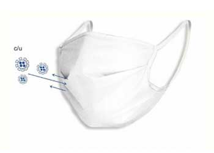
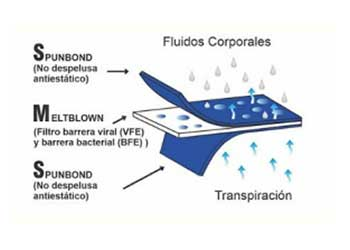
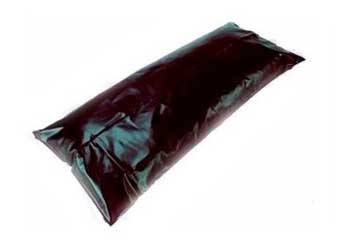

Mascarilla Tipo N95
Características
- 2 Capas de SMS quirúrgico de 70 grs/c.u.
- Solución ANTIMICROBIANA.
- Rigidez y seguridad.
- Resorte de 3 ligas.
- Forma anatómica.
- Unitalla.
- Protege de los líquidos.
- Generación de cámara plena.
- Extingue el fuego.
- Cubre de gases.
- Transpirable.

Barrera Protectora Contra:
- Virus y bacterias.
- Enfermedades de alto riesgo.
- Saliva y fluidos.
- Incluso después de múltiples limpieza, continúa protegiendo.
- Está diseñada para evitar la generación de olores, la degradación y la decoloración causada por la contaminación microbiana.

Bolsas Mortuorias
PRODUCTO: Bolsa de polietileno de baja densidad y alta resistencia cocida con BIES y cierre con 2 correderas.
DIMENSIONES: 80 cm de ancho - 1.90 mts de largo
CARGA MÁXIMA: 200KG
COLOR: Verde limón o negro.
CALIBRE: 600 MICRONES
PROPIEDADES MECÁNICAS:
Resistencia Máxima a la tensión: 95 Mpa
Elongación a la ruptura: 90%
Resistencia al Rasgado: 385 kN/m
Carga Máxima: 200 kg
Resistencia Caída Libre: 3.5 mts
Producción semanal: 200 mil bolsas
